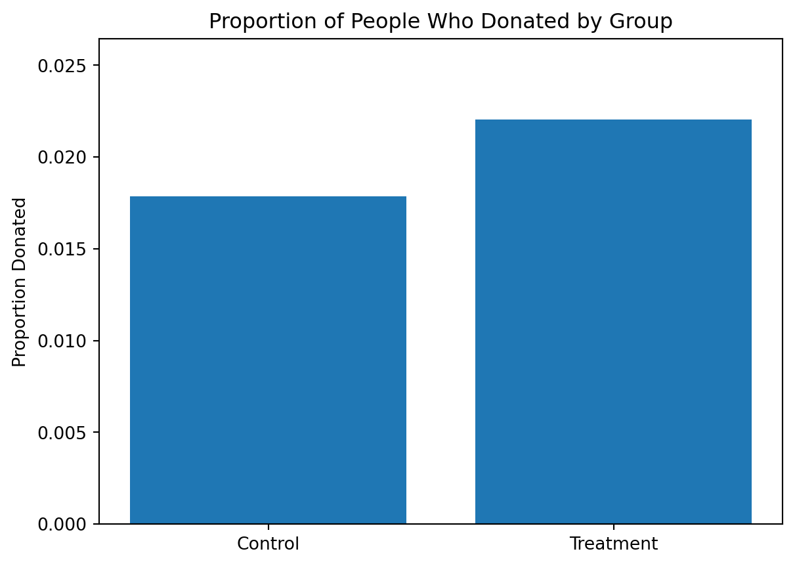
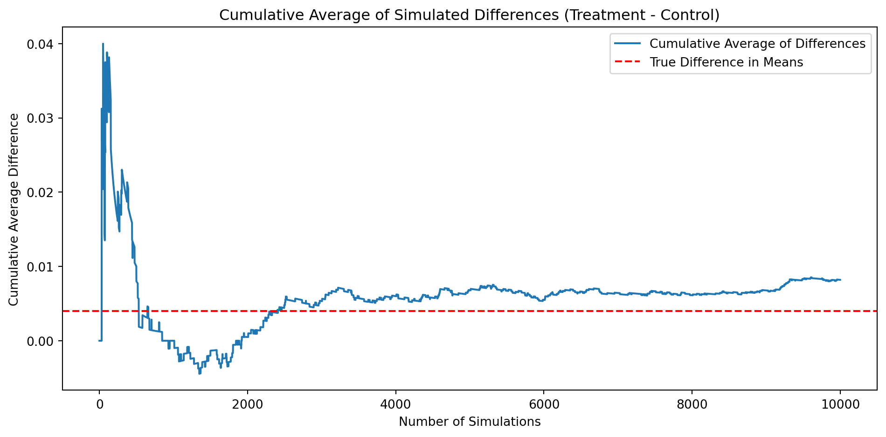

Dean Karlan at Yale and John List at the University of Chicago conducted a field experiment to test the effectiveness of different fundraising letters. They sent out 50,000 fundraising letters to potential donors, randomly assigning each letter to one of three treatments: a standard letter, a matching grant letter, or a challenge grant letter. They published the results of this experiment in the American Economic Review in 2007. The article and supporting data are available from the AEA website and from Innovations for Poverty Action as part of Harvard’s Dataverse.
The experiment aimed to evaluate how different fundraising strategies influence donor behavior. The standard letter served as a baseline, while the matching grant letter offered to match donations at a specific ratio, and the challenge grant letter set a fundraising goal that needed to be met for the funds to be unlocked. These treatments were designed to test the psychological and economic factors that motivate charitable giving, such as reciprocity, social pressure, and perceived impact.
The study measured key outcomes, including the likelihood of donating and the amount donated, to assess the effectiveness of each treatment. By randomly assigning participants to treatment groups, the researchers ensured that any observed differences in outcomes could be attributed to the fundraising strategy rather than external factors. This rigorous design allowed them to draw causal inferences about the impact of the treatments on donor behavior.
This project seeks to replicate their results.
Data
Description
import pandas as pddf = pd.read_stata("karlan_list_2007.dta")# Display basic information about the datasetprint("Dataset Overview:")print(df.info())# Summary statisticsprint("\nSummary Statistics:")print(df.describe())
Suggested donation was highest previous contribution
askd2
Suggested donation was 1.25 x highest previous contribution
askd3
Suggested donation was 1.50 x highest previous contribution
ask1
Highest previous contribution (for suggestion)
ask2
1.25 x highest previous contribution (for suggestion)
ask3
1.50 x highest previous contribution (for suggestion)
amount
Dollars given
gave
Gave anything
amountchange
Change in amount given
hpa
Highest previous contribution
ltmedmra
Small prior donor: last gift was less than median $35
freq
Number of prior donations
years
Number of years since initial donation
year5
At least 5 years since initial donation
mrm2
Number of months since last donation
dormant
Already donated in 2005
female
Female
couple
Couple
state50one
State tag: 1 for one observation of each of 50 states; 0 otherwise
nonlit
Nonlitigation
cases
Court cases from state in 2004-5 in which organization was involved
statecnt
Percent of sample from state
stateresponse
Proportion of sample from the state who gave
stateresponset
Proportion of treated sample from the state who gave
stateresponsec
Proportion of control sample from the state who gave
stateresponsetminc
stateresponset - stateresponsec
perbush
State vote share for Bush
close25
State vote share for Bush between 47.5% and 52.5%
red0
Red state
blue0
Blue state
redcty
Red county
bluecty
Blue county
pwhite
Proportion white within zip code
pblack
Proportion black within zip code
page18_39
Proportion age 18-39 within zip code
ave_hh_sz
Average household size within zip code
median_hhincome
Median household income within zip code
powner
Proportion house owner within zip code
psch_atlstba
Proportion who finished college within zip code
pop_propurban
Proportion of population urban within zip code
Balance Test
As an ad hoc test of the randomization mechanism, I provide a series of tests that compare aspects of the treatment and control groups to assess whether they are statistically significantly different from one another.
import pandas as pdimport numpy as npfrom scipy import statsimport statsmodels.api as smvariables_to_test = ['mrm2', 'freq', 'years']for var in variables_to_test:print(f"\n=== Testing variable: {var} ===") group_means = df.groupby('treatment')[var].mean() group_counts = df.groupby('treatment')[var].count() group_vars = df.groupby('treatment')[var].var() n1 = group_counts[1] n0 = group_counts[0] mean1 = group_means[1] mean0 = group_means[0] var1 = group_vars[1] var0 = group_vars[0]print(f"Treatment mean: {mean1:.3f}, Control mean:{mean0:.3f}")print(f"Treatment std: {var1**0.5:.3f}, Control variance:{var0**0.5:.3f}") se = np.sqrt(var1/n1 + var0/n0) t_stat = (mean1 - mean0) / se dfree = (var1/n1 + var0/n0)**2/ ((var1**2)/((n1**2)*(n1-1)) + (var0**2)/((n0**2)*(n0-1))) p_value =2* (1- stats.t.cdf(np.abs(t_stat), df=dfree))print(f"T-test: t = {t_stat:.3f}, p = {p_value:.3f}") X = sm.add_constant(df['treatment']) y = df[var] model = sm.OLS(y, X, missing='drop').fit() coef = model.params['treatment'] pval = model.pvalues['treatment']print(f"Regression: coef = {coef:.3f}, p = {pval:.3f}")
=== Testing variable: mrm2 ===
Treatment mean: 13.012, Control mean:12.998
Treatment std: 12.086, Control variance:12.074
T-test: t = 0.120, p = 0.905
Regression: coef = 0.014, p = 0.905
=== Testing variable: freq ===
Treatment mean: 8.035, Control mean:8.047
Treatment std: 11.390, Control variance:11.404
T-test: t = -0.111, p = 0.912
Regression: coef = -0.012, p = 0.912
=== Testing variable: years ===
Treatment mean: 6.078, Control mean:6.136
Treatment std: 5.442, Control variance:5.625
T-test: t = -1.091, p = 0.275
Regression: coef = -0.058, p = 0.270
The t-test and linear regression both test for mean differences between the treatment and control groups on these baseline variables, and the results should be identical. This result is also aligned with the Table 1 in the paper. ## Experimental Results
Charitable Contribution Made
First, I analyze whether matched donations lead to an increased response rate of making a donation.
import matplotlib.pyplot as plt# Calculate donation rates by groupdonation_rates = df.groupby('treatment')['gave'].mean()labels = ['Control', 'Treatment']plt.bar(labels, donation_rates)plt.ylabel('Proportion Donated')plt.title('Proportion of People Who Donated by Group')plt.ylim(0, donation_rates.max() *1.2)plt.show()

Above is the proportion of people who donated in control and treatment groups.
Next, I run a t-test and a bivariate linear regression between the treatment and control groups on the binary outcome of whether any charitable donation was made.
import numpy as npimport statsmodels.api as smfrom scipy import statsdf_clean = df[['gave', 'treatment']].dropna()gave_treatment = df_clean[df_clean['treatment'] ==1]['gave']gave_control = df_clean[df_clean['treatment'] ==0]['gave']t_stat, p_value = stats.ttest_ind( gave_treatment, gave_control, equal_var=False)print(f"T-test (scipy): t = {t_stat:.3f}, p = {p_value:.4f}")# Linear regressionX = sm.add_constant(df_clean['treatment'])y = df_clean['gave']model = sm.OLS(y, X).fit()coef = model.params['treatment']pval = model.pvalues['treatment']print(f"Regression: coef = {coef:.3f}, p = {pval:.4f}")
T-test (scipy): t = 3.209, p = 0.0013
Regression: coef = 0.004, p = 0.0019
Both the t-test and regression show whether the treatment group is more likely to donate than the control group.
The p-value is small(<0.01), which means the difference is statistically significant: the matching grant treatment increases the likelihood of giving. This suggests that people are more likely to donate when their gift is matched, supporting the idea that matching grants motivate charitable behavior.
Then, I ran a probit regression where the outcome variable is whether any charitable donation was made and the explanatory variable is assignment to treatment or control.
Optimization terminated successfully.
Current function value: 0.100443
Iterations 7
Probit Marginal Effects
=====================================
Dep. Variable: gave
Method: dydx
At: overall
==============================================================================
dy/dx std err z P>|z| [0.025 0.975]
------------------------------------------------------------------------------
treatment 0.0043 0.001 3.104 0.002 0.002 0.007
==============================================================================
The coefficient on ‘treatment’ should match Table 3 column 1 in the paper. A positive and significant coefficient here means being assigned to the treatment group increases the probability of making a donation, consistent with the main findings.
Differences between Match Rates
Next, I assess the effectiveness of different sizes of matched donations on the response rate.
First, I used a series of t-tests to test whether the size of the match ratio has an effect on whether people donate or not between every two sizes (1:1 vs 2:1, 2:1 vs 3:1, 1:1 vs 3:1).
df_ratio = df[(df['treatment'] ==1) & (df['ratio'].notnull()) & (df['gave'].notnull())]# 1:1 vs 2:1gave_1to1 = df_ratio[df_ratio['ratio'] ==1]['gave']gave_2to1 = df_ratio[df_ratio['ratio'] ==2]['gave']t_stat_12, p_val_12 = stats.ttest_ind(gave_1to1, gave_2to1, equal_var=False)print(f"1:1 vs 2:1 match: t = {t_stat_12:.3f}, p = {p_val_12:.4f}")# 2:1 vs 3:1gave_3to1 = df_ratio[df_ratio['ratio'] ==3]['gave']t_stat_23, p_val_23 = stats.ttest_ind(gave_2to1, gave_3to1, equal_var=False)print(f"2:1 vs 3:1 match: t = {t_stat_23:.3f}, p = {p_val_23:.4f}")# 1:1 vs 3:1t_stat_13, p_val_13 = stats.ttest_ind(gave_1to1, gave_3to1, equal_var=False)print(f"1:1 vs 3:1 match: t = {t_stat_13:.3f}, p = {p_val_13:.4f}")
1:1 vs 2:1 match: t = -0.965, p = 0.3345
2:1 vs 3:1 match: t = -0.050, p = 0.9600
1:1 vs 3:1 match: t = -1.015, p = 0.3101
These t-tests shows that there is no statistically significant difference in donation rates between the match ratios.
This supports the authors’ comment that “neither the match thresh- old nor the example amount had a meaningful influence on behavior.”
Next, I assessed the same issue using a regression. I created the variable ratio2, and ratio3, and then regressed gave on them.
/var/folders/4l/zkt81q5j4xlbn6fjv2v8jj880000gn/T/ipykernel_84739/1592154894.py:3: SettingWithCopyWarning:
A value is trying to be set on a copy of a slice from a DataFrame.
Try using .loc[row_indexer,col_indexer] = value instead
See the caveats in the documentation: https://pandas.pydata.org/pandas-docs/stable/user_guide/indexing.html#returning-a-view-versus-a-copy
df_ratio['ratio2'] = (df_ratio['ratio'] == 2).astype(int)
/var/folders/4l/zkt81q5j4xlbn6fjv2v8jj880000gn/T/ipykernel_84739/1592154894.py:4: SettingWithCopyWarning:
A value is trying to be set on a copy of a slice from a DataFrame.
Try using .loc[row_indexer,col_indexer] = value instead
See the caveats in the documentation: https://pandas.pydata.org/pandas-docs/stable/user_guide/indexing.html#returning-a-view-versus-a-copy
df_ratio['ratio3'] = (df_ratio['ratio'] == 3).astype(int)
The coefficients on the dummy variables for match ratios show the difference in donation probability compared to the 1:1 match (the omitted group). The coefficients are small and not statistically significant, which means increasing the match ratio does not meaningfully affect the likelihood of donating.
This matches the earlier t-test results and supports the paper’s finding.
I also calculated the response rate difference between the 1:1 and 2:1 match ratios and the 2:1 and 3:1 ratios in two ways – directly from the data, and by computing the differences in the fitted coefficients of the previous regression.
Direct from data: Response rate difference (2:1 - 1:1): 0.0019
Direct from data: Response rate difference (3:1 - 1:1): 0.0020
Direct from data: Response rate difference (3:1 - 2:1): 0.0001
From regression: Response rate difference (2:1 - 1:1): 0.0019
From regression: Response rate difference (3:1 - 1:1): 0.0020
From regression: Response rate difference (3:1 - 2:1): 0.0001
Both the direct calculation and regression coefficients show that the differences in response rates between 1:1, 2:1, and 3:1 match ratios are very small and not statistically significant. This suggests that increasing the match ratio does not meaningfully increase the likelihood of donating, confirming the findings in the paper.
Size of Charitable Contribution
In this subsection, I analyze the effect of the size of matched donation on the size of the charitable contribution.
I first examined whether the treatment group gives a different average donation amount than the control group by t-test.
The p-value is large (>0.05), it means there is no statistically significant difference in average donation amount between groups. This suggests that while matching grants may increase the likelihood of giving, they do not necessarily increase the average amount donated.
Then, I limited the data to just people who made a donation and repeat the previous analysis. This regression allows me to analyze how much respondents donate conditional on donating some positive amount.
This analysis examines whether, among those who donated, the average donation amount differs between treatment and control groups.
The treatment coefficient is not statistically significant, which suggests that matching grants do not increase the average donation size among donors—only the likelihood of giving. Because treatment was randomly assigned, the coefficient can be interpreted causally: it estimates the effect of being offered a match on the average donation amount, conditional on donating.
Here I make two plots to show the distribution of the donation amounts for people who donated in treatment and control groups. This also support the conclusion that matching grants do not increase the average donation size among donors—only the likelihood of giving.
As a reminder of how the t-statistic “works,” in this section I use simulation to demonstrate the Law of Large Numbers and the Central Limit Theorem.
Suppose the true distribution of respondents who do not get a charitable donation match is Bernoulli with probability p=0.018 that a donation is made.
Further suppose that the true distribution of respondents who do get a charitable donation match of any size is Bernoulli with probability p=0.022 that a donation is made.
Law of Large Numbers
To illustrate Law of Large Numbers, I simulated 100,00 draws from the control distribution and 10,000 draws from the treatment distribution. I then calculated a vector of 10,000 differences, and then plot the cumulative average of that vector of differences.
np.random.seed(42)control_draws = np.random.binomial(1, 0.018, 10000)treatment_draws = np.random.binomial(1, 0.022, 10000)# Calculate vector of differencesdiffs = treatment_draws - control_draws# Cumulative average of differencescum_avg = np.cumsum(diffs) / np.arange(1, len(diffs) +1)# True difference in meanstrue_diff =0.022-0.018plt.figure(figsize=(10, 5))plt.plot(cum_avg, label='Cumulative Average of Differences')plt.axhline(true_diff, color='red', linestyle='--', label='True Difference in Means')plt.xlabel('Number of Simulations')plt.ylabel('Cumulative Average Difference')plt.title('Cumulative Average of Simulated Differences (Treatment - Control)')plt.legend()plt.tight_layout()plt.show()

This plot shows how the cumulative average of the simulated differences between treatment and control groups converges to the true difference in means as the number of simulations increases.
As more samples are drawn, the cumulative average stabilizes around the true value (0.004), illustrating the Law of Large Numbers.
Central Limit Theorem
To illustrate Central Limit Theorem, I made 4 histograms at sample sizes 50, 200, 500, and 1000. For each sample size, e.g. 50, I took 50 draws from each of the control and treatment distributions, and calculate the average difference between those draws. Then repeat that process 999 more times so that I had 1000 averages.
Each histogram shows the distribution of average differences in donation rates between treatment and control groups, simulated 1000 times for different sample sizes.
As the sample size increases, the distribution becomes narrower and more centered around the true difference (green line), and zero (red line) moves further into the tail.
This illustrates the Central Limit Theorem: with larger samples, our estimate of the difference becomes more precise and less likely to include zero if there is a true effect.